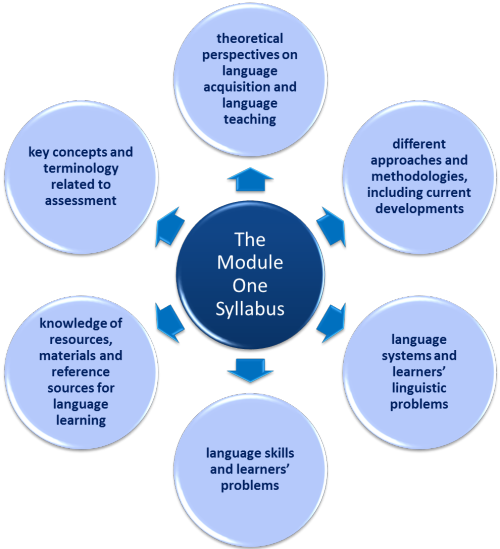

A free training course for Delta Module One
Understanding language, methodology and resources for teaching
 |
This is a free self-study course for Module One of the Delta |
You do not have to take a course at a recognised centre to enter the Delta Module One examination. You can take the
examination at a Cambridge Open Centre.
To find an open centre near you,
click here to go to the Cambridge site and enter the details.
(Note that you need to find an open centre rather than
a closed, internal-only centre.)
You can, naturally, take a taught course for Delta Module One and
there are providers of such things worldwide. The cost of a
taught course varies enormously but you should expect to pay between
£600 and £900 or so for a course. In addition, you will have
to pay the examination fee which is around £150.
This course is completely free (bar the examination fee which you
pay to the centre of your choice along, probably, with a local fee).
The course for Module One covers all the syllabus areas.
Following it won't guarantee you a pass, of course, but if
you take your time, do things thoroughly and follow all the
sections you will be well prepared.
Parts of this course will send you off to follow guides
elsewhere on the site. Be prepared for that.
This page serves as an introduction and contains:
- A description and link to a suggested study programme.
- An introduction and task to familiarise you with the delta Module One examination.
- Advice on how much time to devote to the course and when to do it.
- What support there is and what the course involves.
- Information on how the course is organised.
- A diagram of the course components with links to each of its six main parts.
- Lots of advice about how to revise.
- Comments on the examination.
 |
Following the course |
 |
A study plan |
This is not a drop-by-when-you-like course because it won't work
that way.
To follow it seriously, you need a study plan for yourself so that
you are managing your time intelligently. Your first task is,
therefore, to write a study plan and to do that, you need to
consider:
- There are six areas of the syllabus and each has both an overview guide and links to some of the other guides on this site that you should follow. You need to make sure your study plan allows for time to do these. Some are longer than others.
- You need to plan in time for revision and reviews.
- You need to plan in some catch-up time so you know you can go back and review sections you found more challenging.
If you would like a suggested study plan, there is one on this
site.
The plan is designed for someone devoting around 12 hours per week
to the course over around 8 weeks but can, naturally, be amended to suit your management
of your time.
You can download the plan as a PDF document
here.
 |
IntroductionThe course starts here! |
This is a reading task to familiarise yourself with
the format of the Delta Module One Examination.
It will give you the background data so that talk of Paper2, Task
3 etc. will not be mysterious.
In particular, the guides will explain the marking scheme so that
you can plan your time in the examination itself and not take half
the time trying to get 10% of the marks.
 |
|
The examination comprises two papers, each of 90 minutes with a half-hour breather between them. The examination is held twice a year, in early June and December, usually on the first Wednesday of those months.
The examination targets different areas:
- Paper 1 tests your knowledge of
- ELT terminology
- writing and speaking sub-skills
- language systems (grammar, lexis, phonology and discourse).
- Paper 2 tests your knowledge of
- ELT testing
- the aims, purposes and principles behind published teaching materials
- the principles and beliefs underlying ELT methodology.
Now that you know what you are letting yourself in for, we can look at some other issues.
 |
How much time to devote to the course |
People work at different speeds and some sections are larger than
others. It is also true that people come to the course with
different experiences and knowledge. It is difficult to
predict, therefore, just how long you will need.
Overall, assuming no knowledge beyond that provided on an initial
training course such as CELTA or the Trinity CertTESOL, the course should take around 100 hours to complete.
That's a slightly generous allowance and many people may be able to do it
in less time.
Much depends on how thorough you want to be in chasing down the
links to guides on the site which appear in each section.
Sections 3 and 4 in particular, require you to do so.
Don't do it all at once.
 |
When to do the course |
The examination is usually held in the morning of the first Wednesday in
June and December each year.
Plan your time so that you take the examination about a week or so after you have finished
the course, which allows you some recovery, revision and reflection
time. (This means, for example, if you intend to take the
examination in June, you can devote 8 hours a week to this
course starting in mid-February. That's a generous allowance
so you could take a week off in the middle.)
Decide how much time you can realistically devote to this each week
and then work backwards from your preferred examination date,
bearing the 100 hours of study time in mind.
 |
Support |
This course is free so you can't expect dedicated tutor support.
However, some support which is free and contains no warranty is now
available to anyone unable or, for any reason, unwilling to take a
paid-for course. To learn more about what support may be
available, go to
the Delta support page.
In any event, if an area puzzles, confuses or plain bewilders you, try
posting a question to
ELT Concourse. If you are not alone in your bewilderment,
it will probably get addressed on these pages.
Your colleagues are an invaluable source of support. If at all
possible, try to do this course with a colleague so that you can
test each other and bounce ideas around.
 |
What the course involves |
This will not be easy and will require you to take notes, read, respond to tasks and do quite a lot of tests and revision exercises. There is no reading list because you are not expected to refer to sources in the examination. There is, however, a reference list for Modules One and Two of the Delta which will open in a new tab for you to download and print if you need to. You should have access to (and read!) at least one resource for each area.
The other resource that this course draws on heavily is the site
itself and from time to time you will be required or advised to
follow some of the guides in the in-service training area. You
do not need to do that immediately so you can simply note which
guide you should find later when time permits.
To have any chance of passing, you need to do the obligatory guides
but if you have aspirations for more than a pass or have time to
spare, doing the recommended guides will pay dividends.
The tests which accompany each area of the course (and which are
linked at the end of each guide) target more than has been covered
in the guide itself because they assume that you have followed
at least some of the recommended extra guides.
If you find them confusing or impossible, you can always go to the
guides to those areas to learn what you don't know.
At the end of each section, you will encounter this graphic:

and it will take you to some examination practice for the area you
have just studied.
(The image of a pen is deliberately chosen to encourage you to do
the examination practice by hand because you need to get accustomed
to that. In the examination itself, you will have to write
quickly, legibly and continuously for 3 hours and that is not
something that many people have done for a long time.)
There is a complete Delta Module One revision course on this site but you should do that only when you have finished the course. Doing any of the revision course before the course proper is a waste of your time and the resource itself.
 |
How the course is organised |
Including this introduction, there are seven sections.
We have chosen to use the Cambridge syllabus document as the
organising principle rather than following the tasks in papers 1 and
2 of the examination in order.
There is no one-to-one relationship between the format of the
examination and the format of the syllabus so you will find
different parts of this course are tested in various tasks on each
paper.
This may be confusing at first but it allows you to build your
knowledge incrementally as you work through each section and, as you
gain greater familiarity with what the examination tasks target, you
will be able quickly to see what fits where.
 |
Start |
Click
on the area you want to begin with for more.
If this is the first time you have worked through the course, start with
theoretical perspectives on language acquisition and language
teaching and then go on to different approaches and methodologies
including current developments. These are
closely related areas. Then work clockwise around the
outer circle.
At any time, you can click on the small picture of the syllabus
areas graphic at the bottom of the page and that will take you back
to this diagram. Links in the menu on the left of all pages will also take you where
you need to go.
The course contains links to guides elsewhere on the
site. Those links usually open in a new tab but be prepared to use the back button on your browser
from time to time.

 |
At the end of the course |
There are links on the left to take you back to the Delta index or on to the Mock examinations. These links lead outside the course. Follow them at the end.
 |
Revision and more |
Once you have done the course and taken the tests, it's time for a little revision. You should do this in the days and weeks leading up to the examination. There are many things you can do (links open in new tabs):
| The revision course | The course covers all the areas of Module One of the Delta and has tasks on each section. |
| Terminology test | A long 100-item test for ELT to see if there are areas you need to re-visit. |
| Examination tips | These contain the most common gripes from markers and reasons for failing. |
| Paper 1 revision | There are links from here to lots of revision tests for each task in each paper. |
| Paper 2 revision | |
| Mock examinations | There are two full mock examinations with answer keys and marking advice. |
| Glossaries | These cover various aspects of the subject area and may focus you on terms that are unfamiliar to you. |
| The A-Z index | Browse the lists for areas which puzzle, intrigue or have interested you. |
In addition you can:
- Work through the course sections focusing only on the areas with which you had some difficulty. Use the links on this page.
- Retake the tests for each section of the guide (go to the link at the end of each section).
- Revisit the examination practice areas for each section of the syllabus (go to the link at the end of each section).
Two or three days before your examination, come back to the course and review what you learned. Re-taking tests or redoing the revision course is a good way to revise.
 |
Entering for the examination |
If you are studying independently for Module One, you need to find a
Cambridge Open Centre where you can take the examination.
To find an open centre near you,
click here to go to the Cambridge site and enter the details.
(Note that you need to find an open centre rather than
a closed, internal-only centre.)
Most centres have a deadline for entry at least 4 weeks prior to the
examination and some may require even more notice so make sure you
apply in good time.
Enjoy the course and good luck in the examination.
If you would like to send feedback including ideas for developing
the course, please use
the contact page.